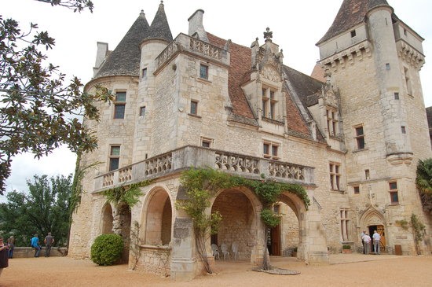

Les Chateaux à visiter
Notre patrimoine coup de coeur...

Château des Milandes
Inscrit au titre des Monuments Historiques depuis 1987 avec une extension en 2009, le château des Milandes fut la demeure de Joséphine Baker (1906-1975) chanteuse, danseuse et meneuse de revue d’origine américaine. Il abrite aujourd'hui une exposition qui lui est consacrée où se mêlent robes et objets fétiches de l’artiste et qui offre une rétrospective de sa vie d'artiste, mais aussi de résistante et mère adoptive de douze enfants, tous de nationalité différente, qu'elle appelait sa "tribu arc-en-ciel". Criblée de dettes, le château sera vendu par adjudication en 1968, un dixième de sa valeur.
D'autres châteaux qui pourraient vous intéresser...
 est ancré sur une paroi rocheuse et domine un cingle (boucle encaissée) de la Dordogne, appelé « cingle de Montfort ». La construction présente un bel ensemble de fortifications. Une partie des bâtiments est située en surplomb au-dessus de la Dordogne. Assorti d'un triple rempart, le château épouse la forme de la falaise qui lui sert d'assiette. Dénué de symétrie, il développe, du côté de la Dordogne, une façade sobre flanquée d'un robuste donjon à machicoulis. Vers le bourg, ce donjon épaule un logis du XVème et une tour polygonale. L'escalier d'entrée, encadré de statues, conduit à un châtelet précédant une cour intérieure dont la tour polygonale est dotée d'un crénelage anachronique, et la tour circulaire est coiffée d'un lanternon germanique. Des loggias à l'italienne, insolites, déparent l’ensemble.")